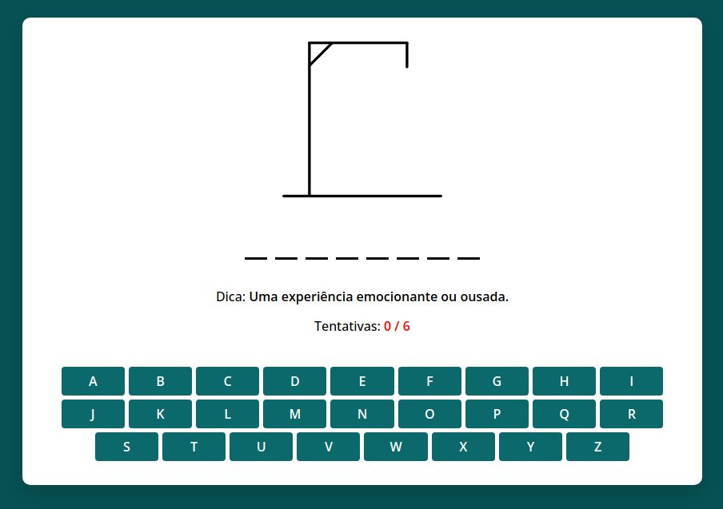

Jogo da Forca
Descrição
O jogo da forca é um jogo de adivinhação de palavras em que um jogador tenta descobrir uma palavra secreta escolhendo letras. Cada erro adiciona uma parte do corpo em um desenho de uma forca. O objetivo é adivinhar a palavra antes que o desenho da forca seja completado.
Vamos recriar este jogo utilizando Javascript.

Imagens
As imagens que vamos utilizar nesse projeto estão na pasta images. São as imagens do jogador na forca e um gif animado para representar a vitória (quando adivinhamos a palavra antes do jogador ser enforcado) e para derrota.
A imagem hangman-0.svg contém a forca no seu estado inicial, ou seja, quando o jogo está no início e ainda não foi feita nenhuma tentativa de acertar uma letra.
Depois temos as demais imagens com o padrão de nome hangman-x.svg onde o x vai de 1 até 6. Cada uma dessas imagens vai representar as tentativas erradas de acertar a letra da palavra sorteada. Então o jogador tem direito a errar apenas 5 letras pois a sexta já vai ser fim de jogo, a imagem hangman-6.svg representa o jogar enforcado.
Construção do HTML
Estrutura Básica
Vamos criar uma pasta para armazenar os arquivos do jogo. Crie uma pasta jogo-da-forca no Desktop ou em qualquer outro lugar no seu sistema de arquivos. O primeiro arquivo que vamos criar é o index.html. Salve esse arquivo dentro da pasta jogo-da-forca.
No topo do seu arquivo index.html, temos a declaração do documento HTML5 e as primeiras tags que compõem a estrutura da página.
<!DOCTYPE html>
<html lang="en">
<head>
<meta charset="UTF-8" />
<!-- Define o conjunto de caracteres como UTF-8 -->
<meta name="viewport" content="width=device-width, initial-scale=1.0" />
<!-- Configura a página para ser responsiva -->
<title>Jogo da Forca</title>
<!-- Título da página -->
<link rel="stylesheet" href="css/style.css" />
<!-- Importa o arquivo de estilos CSS -->
<script src="js/word-list.js" defer></script>
<!-- Carrega o script de lista de palavras -->
<script src="js/script.js" defer></script>
<!-- Carrega o script principal do jogo -->
</head>
<body></body>
</html>
Aqui temos o básico:
- UTF-8 é o conjunto de caracteres mais comum e permite suportar a maioria dos idiomas.
- O meta viewport faz com que o layout se adapte em dispositivos móveis.
- Os scripts são carregados com o atributo
defer, que garante que eles sejam executados após o carregamento completo da página.
Estrutura do Jogo
Agora, vejamos como o jogo é estruturado no corpo da página (<body>). Adicione o seguinte código entre as tags <body></body>
<div class="game-modal">
<div class="content">
<img src="#" alt="gif"> <!-- Imagem para representar a condição do jogo -->
<h4>Fim de Jogo!</h4> <!-- Título de mensagem do jogo -->
<p>A palavra correta era: <b>palavra</b></p> <!-- Mostra a palavra correta -->
<button class="play-again">Jogar Novamente</button> <!-- Botão de reiniciar -->
</div>
</div>
<div class="container">
<div class="hangman-box">
<img src="images/hangman-0.svg" draggable="false" alt="hangman-img"> <!-- Imagem do boneco -->
</div>
<div class="game-box">
<ul class="word-display"></ul> <!-- Lista para exibir a palavra oculta -->
<h4 class="hint-text">Dica: <b></b></h4> <!-- Exibe uma dica -->
<h4 class="guesses-text">Tentativas: <b></b></h4> <!-- Exibe número de erros -->
<div class="keyboard"></div> <!-- Teclado virtual para a entrada de letras -->
</div>
</div>
Aqui está a estrutura do jogo:
game-modal: Modal que aparece quando o jogo acaba.container: Contém toda a interface do jogo.hangman-box: Exibe a imagem do boneco da forca e o título.game-box: Exibe a palavra oculta, a dica, o número de erros, e o teclado virtual.
Estilos com CSS
Agora que temos o HTML, vamos estilizar os elementos com CSS. Vamos criar a pasta css dentro da pasta jogo-da-forca. Dentro da pasta css crie o arquivo style.css.
Aqui está uma explicação detalhada do CSS do jogo, dividido em partes para melhor compreensão:
Aqui está a explicação detalhada do seu CSS atualizado, dividido em partes:
Importação da Fonte
@import url("https://fonts.googleapis.com/css2?family=Open+Sans:wght@400;500;600;700&display=swap");
- @import: Importa a fonte "Open Sans" do Google Fonts, que será usada em todo o design para garantir uma tipografia consistente e limpa.
Estilos Globais
* {
margin: 0;
padding: 0;
box-sizing: border-box;
font-family: "Open Sans", sans-serif;
}
- Reset de Estilos Globais: Remove margens e preenchimento padrão de todos os elementos para criar uma base de design consistente.
- box-sizing: Faz com que o preenchimento (padding) e as bordas sejam incluídos na largura e altura total do elemento.
- font-family: Define a "Open Sans" como fonte padrão para todos os elementos.
Estilos do Body
body {
display: flex;
padding: 0 10px;
align-items: center;
justify-content: center;
min-height: 100vh;
background: #075053;
}
- display: flex: Define um layout flexível, permitindo que os elementos filhos sejam centralizados.
- padding: Adiciona preenchimento lateral.
- align-items / justify-content: Centraliza os itens vertical e horizontalmente na página.
- min-height: Garante que o corpo ocupe pelo menos toda a altura da janela de visualização.
- background: Define a cor de fundo em um tom verde escuro.
Estilos do Container
.container {
display: flex;
flex-direction: column;
padding: 30px 15px;
align-items: center;
width: 850px;
gap: 70px;
background: #fff;
border-radius: 10px;
justify-content: space-between;
box-shadow: 0 10px 20px rgba(0, 0, 0, 0.1);
}
- flex-direction: column: Organiza os elementos internos do container em uma coluna.
- padding: Cria um espaçamento interno confortável ao redor do conteúdo.
- align-items: Centraliza os itens horizontalmente dentro do container.
- width: Define a largura fixa de 850px.
- gap: Espaçamento entre os elementos dentro do container.
- background: Cor de fundo branca.
- border-radius: Bordas arredondadas para suavizar o design.
- box-shadow: Adiciona uma sombra leve para dar profundidade ao container.
Estilos da Imagem do Hangman
.hangman-box img {
user-select: none;
max-width: 200px;
}
- user-select: none: Impede que o usuário selecione a imagem.
- max-width: Limita a largura máxima da imagem para 200px, garantindo que se encaixe bem no layout.
Estilos da Palavra (Word Display)
.game-box .word-display {
gap: 10px;
list-style: none;
display: flex;
flex-wrap: wrap;
justify-content: center;
align-items: center;
}
.word-display .letter {
width: 28px;
text-align: center;
font-weight: 600;
text-transform: uppercase;
border-bottom: 3px solid #000;
margin-bottom: 35px;
font-size: 1.7rem;
}
.word-display .letter.guessed {
border-color: transparent;
margin: -35px 0 25px;
}
- word-display: Organiza as letras em uma lista flexível que se ajusta dinamicamente, centralizando as letras no meio da tela.
- letter: Define o estilo de cada letra oculta com borda inferior preta e texto em caixa alta.
- letter.guessed: Remove a borda quando a letra for adivinhada corretamente.
Estilos do Texto de Dicas e Palpites
.game-box h4 {
text-align: center;
font-weight: 500;
margin-bottom: 15px;
font-size: 1rem;
}
.game-box h4 b {
font-weight: 600;
}
.game-box .guesses-text b {
color: #ff0000;
}
- h4: Texto centralizado, com peso intermediário e espaçamento inferior.
- guesses-text b: Destaca os textos dos palpites com uma cor vermelha, dando ênfase.
Estilos do Teclado
.game-box .keyboard {
display: flex;
gap: 5px;
flex-wrap: wrap;
margin-top: 40px;
justify-content: center;
}
:where(.game-modal, .keyboard) button {
color: #fff;
border: none;
outline: none;
cursor: pointer;
font-size: 1rem;
font-weight: 600;
border-radius: 4px;
text-transform: uppercase;
background: #0b696c;
}
.keyboard button {
padding: 7px;
width: calc(100% / 9 - 5px);
}
.keyboard button[disabled] {
pointer-events: none;
opacity: 0.6;
}
:where(.game-modal, .keyboard) button:hover {
background: #0aa5ab;
}
- keyboard: Estilos aplicados ao teclado, organizando os botões em uma estrutura flexível e ajustável.
- button: Os botões têm cores vivas, bordas arredondadas, texto em caixa alta e efeitos de hover, tornando a interação visualmente atraente.
- button[disabled]: Define um estilo visualmente mais claro para botões desativados.
Estilos do Modal do Jogo
.game-modal {
position: fixed;
top: 0;
left: 0;
width: 100%;
height: 100%;
opacity: 0;
pointer-events: none;
background: rgba(0, 0, 0, 0.6);
display: flex;
align-items: center;
justify-content: center;
z-index: 9999;
padding: 0 10px;
transition: opacity 0.4s ease;
}
.game-modal.show {
opacity: 1;
pointer-events: auto;
transition: opacity 0.4s 0.4s ease;
}
.game-modal .content {
padding: 30px;
max-width: 420px;
width: 100%;
border-radius: 10px;
background: #fff;
text-align: center;
box-shadow: 0 10px 20px rgba(0, 0, 0, 0.1);
}
.game-modal img {
margin-bottom: 20px;
max-width: 120px;
}
.game-modal img[src="images/victory.gif"] {
margin-left: -10px;
}
.game-modal h4 {
font-size: 1.45rem;
}
.game-modal p {
margin: 15px 0 30px;
font-weight: 500;
font-size: 1.1rem;
}
.game-modal p b {
color: #5e63ba;
font-weight: 600;
}
.game-modal button {
padding: 10px 18px;
}
- game-modal: Estilo para o modal que aparece no final do jogo, ocupando a tela inteira e com uma sobreposição semitransparente.
- show: Define a transição suave para exibir o modal quando ativado.
- content: Estiliza o conteúdo do modal, com bordas arredondadas, sombras e um layout centralizado.
- img: Imagem no modal com tamanho ajustado e margens para espaço adequado.
Esses estilos proporcionam uma interface moderna, clara e responsiva para o jogo da forca, garantindo boa usabilidade tanto em dispositivos maiores quanto em dispositivos móveis.
Programando o Jogo
Lista de Palavaras
Dentro da pasta js vamos criar o arquivo word-list.js que vai conter apenas uma constante wordList que é um array de objetos. Cada objeto tem duas chaves word para armazenar a palavra que o jogador tem que adivinhar e hint contendo uma dica para ajudar o jogador a adivinhar a palavra. A lista está fixa. Uma melhoria para o jogo seria aumentar o número de palavras e também utilizar alguma forma de agrupamento, por exemplo: animais, cores, etc. para deixar o jogo mais fácil ou difícil.
const wordList = [
{
word: "guitarra",
hint: "Um instrumento musical com cordas.",
},
{
word: "oxigênio",
hint: "Um gás incolor e inodoro essencial para a vida.",
},
...
];
Selecionando Elementos HTML com JavaScript
Nesta etapa, vamos aprender como capturar elementos do DOM (Document Object Model) usando JavaScript para manipulá-los dinamicamente no jogo.
const wordDisplay = document.querySelector(".word-display");
const guessesText = document.querySelector(".guesses-text b");
const keyboardDiv = document.querySelector(".keyboard");
const hangmanImage = document.querySelector(".hangman-box img");
const gameModal = document.querySelector(".game-modal");
const playAgainBtn = gameModal.querySelector("button");
querySelector(): Esse método seleciona o primeiro elemento que corresponde ao seletor CSS fornecido. Aqui, ele está sendo usado para capturar elementos que exibem a palavra, o número de tentativas, o teclado virtual, a imagem do boneco enforcado e o modal de fim de jogo.wordDisplay: É o local onde as letras da palavra serão exibidas.guessesText: Exibe quantas tentativas erradas foram feitas.keyboardDiv: É a área onde o teclado virtual aparecerá.hangmanImage: Mostra a imagem do boneco conforme o progresso do jogo.gameModal: Um modal (janela pop-up) que aparece quando o jogo termina.playAgainBtn: Um botão para reiniciar o jogo.
Variáveis Globais e Inicializando o Jogo
Aqui, vamos definir as variáveis globais necessárias para o funcionamento do jogo.
let currentWord, correctLetters, wrongGuessCount;
const maxGuesses = 6;
currentWord: Armazena a palavra atual que o jogador deve adivinhar.correctLetters: É um array que conterá as letras corretas que o jogador adivinhou.wrongGuessCount: Conta o número de palpites errados que o jogador fez.maxGuesses: O número máximo de tentativas permitidas antes que o jogador perca o jogo.
Função de Reiniciar o Jogo
Vamos criar uma função que reinicia o estado do jogo sempre que ele for iniciado ou reiniciado.
const resetGame = () => {
correctLetters = [];
wrongGuessCount = 0;
hangmanImage.src = "images/hangman-0.svg";
guessesText.innerText = `${wrongGuessCount} / ${maxGuesses}`;
wordDisplay.innerHTML = currentWord.split("").map(() => `<li class="letter"></li>`).join("");
keyboardDiv.querySelectorAll("button").forEach(btn => btn.disabled = false);
gameModal.classList.remove("show");
}
correctLetters = []: Reinicializa o array que armazena as letras corretas.wrongGuessCount = 0: Zera a contagem de tentativas erradas.hangmanImage.src: Define a imagem inicial do boneco da forca.wordDisplay.innerHTML: Gera os espaços em branco para cada letra da palavra.keyboardDiv.querySelectorAll("button").forEach(...): Habilita todos os botões do teclado virtual para novos palpites.gameModal.classList.remove("show"): Oculta o modal de fim de jogo, caso ele esteja visível.
Escolhendo uma Palavra Aleatória
Agora, vamos adicionar a lógica para selecionar uma palavra aleatória da lista de palavras e começar o jogo.
const getRandomWord = () => {
const { word, hint } = wordList[Math.floor(Math.random() * wordList.length)];
currentWord = word;
document.querySelector(".hint-text b").innerText = hint;
resetGame();
}
wordList: É uma lista contendo palavras e dicas, da qual escolhemos uma palavra aleatória.Math.random(): Gera um número aleatório entre 0 e o tamanho da lista de palavras.resetGame(): Reinicia o jogo após selecionar a palavra.hint: Exibe a dica correspondente à palavra escolhida.
Para testar coloque ao final do arquivo script.js uma chamada para a função getRandomWord()
...
getRandomWord()
Vemos que a modal de final de jogo foi escondida e foi sorteada uma palavra aleatória para o jogador tentar adivinhar.
Lógica de Fim de Jogo
Agora vamos criar a lógica que decide se o jogador ganhou ou perdeu e exibe uma mensagem correspondente.
const gameOver = (isVictory) => {
const modalText = isVictory ? `Você descobriu a palavra:` : 'A palavra correta era:';
gameModal.querySelector("img").src = `images/${isVictory ? 'victory' : 'lost'}.gif`;
gameModal.querySelector("h4").innerText = isVictory ? 'Parabéns!' : 'Game Over!';
gameModal.querySelector("p").innerHTML = `${modalText} <b>${currentWord}</b>`;
gameModal.classList.add("show");
}
isVictory: Um parâmetro que indica se o jogador venceu ou perdeu.gameModal: Exibe uma mensagem e uma imagem apropriada (vitória ou derrota) e mostra o modal de fim de jogo.
Iniciando o Jogo com o Teclado Virtual
Agora, vamos adicionar a função que será chamada toda vez que o jogador clicar em uma letra no teclado virtual.
const initGame = (button, clickedLetter) => {
if(currentWord.includes(clickedLetter)) {
[...currentWord].forEach((letter, index) => {
if(letter === clickedLetter) {
correctLetters.push(letter);
wordDisplay.querySelectorAll("li")[index].innerText = letter;
wordDisplay.querySelectorAll("li")[index].classList.add("guessed");
}
});
} else {
wrongGuessCount++;
hangmanImage.src = `images/hangman-${wrongGuessCount}.svg`;
}
button.disabled = true;
guessesText.innerText = `${wrongGuessCount} / ${maxGuesses}`;
if(wrongGuessCount === maxGuesses) return gameOver(false);
if(correctLetters.length === currentWord.length) return gameOver(true);
}
- Verifica se a letra clicada existe na palavra: Se a letra existe, ela é exibida na posição correta. Caso contrário, o número de erros aumenta.
- Desabilitar o botão clicado: Para evitar que o jogador clique na mesma letra várias vezes, o botão é desabilitado após ser clicado.
Criando o Teclado Virtual
Finalmente, vamos criar o teclado virtual e adicionar os eventos de clique para cada botão.
for (let i = 97; i <= 122; i++) {
const button = document.createElement("button");
button.innerText = String.fromCharCode(i);
keyboardDiv.appendChild(button);
button.addEventListener("click", (e) => initGame(e.target, String.fromCharCode(i)));
}
- Cria os botões do teclado: Usamos o valor ASCII das letras minúsculas de
aazpara criar os botões do teclado. addEventListener(): Adiciona um evento de clique a cada botão para que, ao ser clicado, ele chame a funçãoinitGame().
Reiniciar o Jogo
Por fim, adicionamos a funcionalidade para reiniciar o jogo ao clicar no botão "Play Again".
getRandomWord();
playAgainBtn.addEventListener("click", getRandomWord);
getRandomWord(): Chama a função que escolhe uma nova palavra e reinicia o jogo.playAgainBtn.addEventListener(): Adiciona um evento ao botão de reiniciar o jogo.